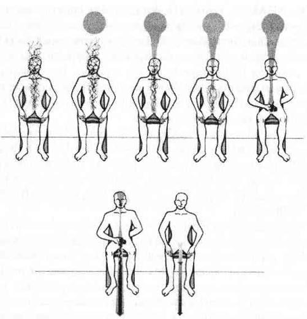

SORUN ÇÖZME KILAVUZU
Yeni kitaplarda okuduğum yeni fikirlere bayılırım ama böyle yeni konularda soru sormak istediğimde sinir olurum çünkü yazarlara ulaşmak neredeyse imkansızdır. Ulaşsam bile genellikle ya suya sabuna dokunmayan bir cevap alırım ya da pahalı bir dergiye üyelik formu. Kabul edilir gibi değil.
Bu kadar çok enerji yönteminin anlatıldığı bir kitap yazmadan önce yıllarca uzun uzadıya düşündüm. Pek çok kişi bu yepyeni yöntemlere şöyle bir göz atacak ve fazla da düşünmeden bunları uygulamaya kalkışacaktı. Astral yolculuğa çıkan ama tümüyle bedenlerine dönemeyen onlarca insanı tedavi ettim. Birinci çakrasından kundalini enerjisini fırlatmış, sonra da enerjiyi tersine çevirecek kadar bedenlerinde merkezlenemeyen sayısız insanda kundalini akınını durdurdum. Bence, kendine yardım kitaplarında yer alan gözden geçirilmemiş davranışlar ve beklentiler cevaplayabileceklerinden çok daha fazla soru yaratıyorlar. Diğer kitaplar ise o kadar katı dogmalarla yazılmış oluyor ki, çoğu okuyucu yeni bir rejime adım atmadan önce soru sormuyor bile.
Ben buna iki aşamalı bir çözüm getiriyorum. Öncelikle, alfabetik düzende yazılmış bu Sorun Çözme Kılavuzu’nu hazırladım. Başınız sıkışırsa hemen dönüp bakabileceğiniz ve somut yanıtlar bulabileceğiniz bir danışma kaynağınız olsun istedim. Buna ek olarak da, şayet farkındalık düzeyinizin sizi götürdüğü ve benim kapsam içine dahil etmediğim alanlar varsa bana ulaşabileceğiniz bir adres veriyorum. Daha fazla yardıma ihtiyacınız olursa lütfen bana yazın ve çözümleri birlikte bulalım. Size, imzalı bir resmimi ya da bir tanıtım bültenini veya satın alabileceğiniz promosyon ürünleri listesini yollamayacağıma söz veririm. İyi şanslar.
Karla McLaren, P.O. Box 1155,
Columbia, CA, 95310-1155
ACI: Acı, bedenin bir dengesizliği ya da sorunu işaret etme yoludur. Acı farkındalık ve eğer gerekiyorsa mesajının çözülmesi için yardım gerektirir. Kaçmak, ilaçla uyuşturmak ya da görmezden gelmek acıyı fazlalaştırır ve daha önemli hastalıklar için zemin hazırlar. Acı bedenin verdiği bir mesaj olduğu için ruh/beden bölünmesi yaşamış kişiler mutlaka bu mesajı dinlemelidir. Acı veren bölgeyi topraklamak mesajı açıklığa kavuşturmak için harika bir yoldur.
AĞLAMAK: Üzüntü çorak bir sistemi suyla canlandırmak için harika bir yoldur. Üzüntü, bedenin, kasılma ya da kendini kurban etme döneminden sonra gevşemeye izin verdiği durumdur. Ancak kimi zaman üzüntü ve ağlama kontrol edilemez duruma gelir. Bu, sistemde bir dengesizlik olduğunun işaretidir ve duyguları yönlendirme yönteminin uygulanmasını gerektirir.
ALTIN GÜNEŞ: Bu sekizinci çakradır ve gezegendeki herkese açık sınırsız enerjiyi temsil etmek için kullanılan semboldür. Altın güneş tedavisinden sonra, enerjileri yeniden yönlendirmek, bedenle enerji araçlarını bilinçli farkındalığa yükseltmek ve bedeni iyileştirmek için kullanılır. “Altın Güneş Tedavisi” bölümüne bakın.
AURA: Bütün canlı organizmaları çevresinde bulunan bir alandır. Aurayı en iyi tanımlayan, “özel enerji bölgesi” ya da “spiritüel ten” ifadeleridir. Aura genellikle bedenden çıkan renkli bir enerji halesi şeklinde görülür. Aura enerjiden oluşmuş koruyucu bir sınırıdır; auradaki hasar bütün organizmayı etkiler. Aurik farkındalık ve aurik şifa için “Aura Tanımlamak” bölümüne; aura yorumlama ve tedavi etme teknikleri için “Aurayı Yorumlamak” bölümüne bakın.
AURA RENKLERİ: Psişik durugörü yetenekleri olan kişiler altıncı çakralarının yardımı ile aura renklerini görebilirler. Aura renklerinin spesifik anlamları vardır, bununla birlikte bu anlamlar kişiden kişiye büyük değişiklik gösterir. Dahası auralar gün içinde, spiritüel iletişim, sağlık durumu, duygusal durum ve düşünce sürecinin işleyişi gibi birtakım etkenlere bağlı olarak sıklıkla renk değiştirirler. Renklerin genel anlamlarını “Aurayı Yorumlamak” bölümünde bulacaksınız. Ancak yine aynı bölümde auranın sağlıklı olup olmadığının nasıl anlaşılacağına dair; auranın boyutları, biçimi ve genel durumuyla ilgili çok daha yararlı bilgiler bulacaksınız.
AURA SORUNLARI: Kronik ve ciddi aura hasarları ya da yetersizlikleri, genellikle, sağlıksız ve yıpratıcı bir hayat tarzı ya da çalışma koşulları gibi, içinde bulunulan çevrenin sebep olduğu arazlardır. Aura sorunları huzursuzluk vericidir, bununla birlikte hem öğretici hem de tamir edilebilir sorunlardır. Şayet aura dışardan gelen baskıya tepki verip bozulacak kadar uyanıksa bu onun yeni bir hayata hazır olduğunun işaretidir; sahibini neyin iyi neyin kötü hissettirdiği konusunda uyaracaktır. “Aurayı Tanımlamak” ve “Aurayı Yorumlamak” bölümlerine bakın.
Uyarı: Auralar, şayet beden ciddi bir hastalığın tehdidi altındaysa ya da alkol ve uyuşturucu kullanımına tepki olarak da bozulur. Kullandığınız maddeyi hemen bırakın. Şayet auranız bedeninizin belirli bölümlerinde kırılmalar gösteriyorsa hemen bir sağlık uzmanına başvurun.
AURANIN TEDAVİ EDİLMESİ: Auralar bu kitapta anlatılan meditasyonlarla kolayca tedavi edilebilirler. “Aurayı Tanımlamak” bölümünde auranın sade bir tanımlanışı anlatılmıştır. Daha gelişmiş tedavi yöntemleri için “Aurayı Yorumlamak” bölümüne bakın.
BAŞ AĞRILARI: Hastalık, açlık, elektrolit ve kimyasal dengesizlikler, tümörler gibi fiziksel nedenler haricindeki baş ağrıları topraklanmamış olduğunuzu ve bedeninizin dışında olduğunuzu gösterir. Baş ağrıları aynı zamanda kafanızın içindeki odada olmadığınızın ya da altıncı ve yedinci çakralarla bağlantınızın olmadığının işareti de olabilir.
AURA VAKUMLANMASI: Hasar görmüş ya da silikleşmiş auranın temizlenip yeniden tanımlanması için yapılan topraklama egzersizidir. “Aurayı Tanımlamak” bölümüne bakın.
AURA YORUMLAMAK: Auralar inanılmaz miktarda bilgi ihtiva ederler ve bilgiyi işlerler. Bu bilgilere basit bir meditasyon sırasında ya da “Aurayı Yorumlamak” bölümünde anlatılan yorumlama sırasında ulaşılabilir.
BAŞ DÖNMESİ: Baş dönmesinin nedeni kontrol edilmesi gereken pek çok tıbbi dengesizlik olabilir. Ancak baş dönmesi topraklanmamış olmak, beden dışında olmak ve kafanın içindeki odanın dışında olmaktan da kaynaklanabilir. Kundalini tedavisinin anlatıldığı bölümleri okuyun. “Kendinize Ait Bir Oda” ve “Topraklanma” bölümlerine bakın..
BOĞAZ ÇAKRASI: Beşinci çakra olarak da adlandırılan boğaz çakrası iletişim, duruduyum, taahhüt ve değişme yeteneği özelliklerinin enerji merkezidir.
ÇAKRA HİZALAMA: Yedi ana çakra, cinsel organlardan başın tepesine kadar bir hat üzerinde dizilmişlerdir ve hizada oldukları zaman en iyi şekilde çalışırlar. Çakraları hizalamak, çakralar için altın güneş tedavisi uygulamanın basit bir bölümüdür ve aynı bölümde anlatılmıştır.
ÇAKRA RENKLERİ: Çakraların her birinin kendine özgü bir rengi vardır. Auranın değişken renklerinden farklı olarak çakra renklerinin belirli bir amaçları, anlamları ve yorumu vardır. “Çakraları Yorumlamak” bölümüne bakın.
ÇAKRA SORUNLARI: Çakralarda sorunlar genellikle renk ve biçim sapmaları olarak görülür. Bunlar çakra yorumlamaları ve iyileştirmeleri sırasında görülebilir ya da hissedilebilir. Kronik çakra sorunları sağlık, akıl sağlığı ya da endokrin dengesizliklerine; ilaca bağlı hasara, uzun süreli sünger Şifacılığı sözleşmelerine ya da hasar görmüş çakra ile çalışmayı reddetmeye işaret edebilir. “Çakraları Yorumlamak” bölümüne bakın.
ÇAKRA YORUMLAMA: Bu, her çakrayı dinleyerek uygulanan bir tedavi yöntemidir. Üçüncü bölümdeki çakralarla ilgili bilgileri okuyun.
ÇAKRALAR: Çakralar fiziksel bedenin içinde ve dışında bulunan bir dizi enerji merkezidir. Tıpkı auranın enerjik deri olduğu kabul edilebileceği gibi çakralar da enerjik salgı bezleri ya da organlar olarak kabul edilebilir. Her çakra varlığın değişik özelliklerini temsil eder. Hepsi de yorumlanabilir, tedavi edilebilir, yaralardan arındırılabilir ve bilinçli farkındalık düzeyine getirilebilirler. “Çakralar” bölümünü okuyun.
ÇAKRALAR İÇİN ALTIN GÜNEŞ TEDAVİSİ: Çakraları temizlemek ve hizalamak için kullanılan ileri ama kolay bir yöntemdir.
ÇAKRALARIN TEDAVİSİ: Çakralar kolaylıkla okunup yorumlanabilir, iyileştirilebilir, hizalanabilir ve temizlenebilirler. “Çakraları Yorumlamak” bölümüne ve “Çakralar İçin Altın Güneş Tedavisi” bölümüne bakın.
Çok fazla kundalini tüm bir çakra sistemini infilak ettirebilir, aurada yanık delikler oluşturabilir ve kişiyi bedeninden dışarı atabilir. Çok uzun zaman çok fazla kundalini bedende durduysa bendene büyük zarar bile verebilir. Belirtiler, iştah kaybı, uykusuzluk, kabus ve vizyon görme, yanık benzeri kızarıklıklar, tikler, kasılmalardır.
DEHŞET: Dehşet, çılgına dönmüş korkudur ve normal düzeydeki korku duygularının uzun zamandır görmezden gelinip önemsenmediğinin işaretidir. Bu sıcak, yoğun, “kurtarın beni bu lanet yerden!” enerjisi içeride ya da dışarıda çok büyük bir hayati tehlikeye karşı sizi uyarmaktadır. Dehşet duygusuyla hemen ilgilenilmeli ve daha kolay başa çıkılabilecek korku düzeyine indirilmemelidir. Tüm güçlü duygularda olduğu gibi fiziksel bir dengesizlik söz konusu olabilir. Bir akupunktur uzmanına danışmanızı öneririm. Ancak dehşet duygusunu yönlendirmek kökündeki nedenin aydınlanması için yeterlidir.
DELİLİK: Dünyevi açıklaması ile kimyasal dengesizlik olan bu psikolojik bozukluğun ardında spiritüel dengesizlik yatar. Psikiyatrik tedavi yöntemlerini uygulayanlar şizofrenlerdeki duruduyum becerisini; afazik ve felç eğilimli kişilerdeki kundalini sorunlarını ve depresiflerdeki ikinci/üçüncü çakra tıkanıklığını duymak bile istemezler. Kesin olan bir şey vardır; ne ilaç tedavileri ne de hastaları kilit altında tutmak hiçbir zaman iyileşmeyen hastaların akıllarda bıraktığı soru işaretlerini hiçbir zaman ortadan kaldıramadı.
Bu Batı tıbbının bize mirasıdır; hangi yaşam gücünün bozulması sonucunda ortaya çıktığına bile bakmadan hastalıklara güzel isimler bulmak.
Beni yanlış anlamayın. Bir hastalığı tanımlamak önemlidir ve Batı tıbbı bu konuda emsalsizdir ama bir süre sonra “ikinci koğuşta kalan kişilik bölünmeli depresif" olmak ya da “masadaki enfarktüs vakası” olmak ruhu hiçe saymaktır. Bir hastalığın adını bulmak ve belirtileri iyileştirmek yolculuğun ilk adımıdır. Tedavinin sonu değildir.
Psikiyatrik bozukluklar için basit tedaviler yoktur ama beslenme dengesizlikleri ve psişik yaralanmalar daima keşfedilmeye devam edilmelidir. Buna ek olarak psikiyatrik sorunları olan kişilere topraklamayı, odaklanmayı, meditasyonu, çakra ve aura tedavisini öğretmek paha biçilmez olacaktır. Akıl hastalığından muzdarip kişiler arasında bir tane bile dengeli enerji bedeni olan insan görmedim. İlaç tedavisi ve hastanede kalmak zaman zaman gerekli olabilir ama bir kez belirtiler yatıştığında doğru beden bakımı ve uzman spiritüel topraklama bu kişilere en başında “normal” dünyadan ayrılmalarına neden olan şeyleri araştırıp iyileştirme şansı verecektir. Benim önerim bu kitap dahilinde anlatılan duygusal sorunlara ekstra zaman ayrılmasıdır.
DEPRESYON: Depresyonlar komik şeylerdir. Onlara duygular diyebilir miyim bilmiyorum, çünkü ya bütün duyguları maskelerler ya da kişiyi hiçbir yere ulaştırmayan bir duygu tekrarı içine hapsederler. Bir depresyon sırasında duyguları yönlendirmeyi hatırlamak çok zordur çünkü depresyon tüm enerjinizi emer ve herhangi bir şey yapmak için bütün şevkinizi yok eder. Bu bir ipucudur.
Depresyonları bir enerji sızıntınız olduğu ve sizin o enerjiyi geri çağırmadığınız konusunda hayati bir uyarı olarak kabul edin. Bedeniniz böyle durumlarda ileriye doğru atacağınız her adımı durduracak şekilde evrim geçirmiştir. Neden mi? Genellikle enerjiniz acı veren ilişkilerde ya da acı veren bir geçmiş olayda takılıp kalmıştır. Bedeniniz ileriye doğru bir hareketin mümkün olmadığını bilmektedir ve doğal olarak her şey yolundaymış gibi rol yapmaz.
Bedeninize ve duygularınıza size yalan söylemediği için teşekkür edin. Topraklanın ve eski, işe yaramaz enerjilerle sahtecilik yaptığınız acı verici sözleşmeleri bir düşünün. Auranızı ve bedeninizi süzün, umutsuz anılarla dolu sözleşmelerinizi yakın ve eski yaraların imgelerini patlatıp havaya uçurun. İçinizi altın güneş enerjisi ile doldurun ve şimdiki zamanda yaşayarak iyileşmeye devam edin.
Depresyon temizlendikten sonra aura tanımlama, sözleşme yakma, imaj yok etme ve çakra tedavisi konularını gözden geçirin.
DURUDUYUM (CLAIRAUDIANCE): Beşinci çakra aracılığıyla psişik titreşimleri duyma yeteneğidir. Sesler duymak genellikle şizofreni belirtisi olarak yanlış değerlendirilir. Beşinci çakranın anlatıldığı bölümü okuyun.
DURUGÖRÜ (CLAIRVOYANCE): Altıncı çakra ya da üçüncü göz aracılığıyla psişik titreşimleri görme yeteneğidir. Altıncı çakranın anlatıldığı bölümü okuyun.
DURUSEZİ (CLAIRSENTIENCE): İkinci çakra aracılığıyla psişik titreşimleri duygusal ya da empatik olarak hissedebilme yeteneğidir. Bu tedavi yöntemi yakın aile bireyleri dışındaki insanlar için uygulandığında çok tehlikeli olabilir. İkinci çakranın anlatıldığı bölümünü okuyun.
DUYGULAR: Duygular, duygusal bedenden, fiziksel, zihinsel ve ruhsal bedenlere mesaj taşırlar. Her duygunun kendi amacı, sesi, karakteri ve kolayca ulaşılabilecek kendine özgü şifa bilgisi vardır. Duyguları dış dünyaya saçmak ya da kilit altında tutup iltihaplanana kadar saklamak yerine onları iyileştirici enerjiler olarak görmeliyiz. “Duyguları Yönlendirmek” bölümünü okuyun.
DUYGULARI YÖNLENDİRMEK: Görmezden gelinmelerine, aşağılanmalarına, değersiz bulunmalarına karşın duygular aslında ruhun bilgeliğinden gelen son derece değerli mesajlardır. Artık kaçılması mümkün olmayan bir duygu durumuna gelindiğinde duyguyu bedenden, auradan ve topraklama kordonundan yönlendirmek tam bir berraklık ve iyileşme sağlar. “Duyguları Yönlendirmek” bölümüne bakın.
ENDİŞE (ANKSİYETE): Tıpkı diğer bütün duygular gibi endişe de özel bir şifa enerjisini barındırır. Kendisi dışında kalan her şeyin aşırı farkında bir insan için herhangi bir şeyin yanlış gittiğine dair tek bir ipucu bile şüphe kurdunun içini kemirmesine ve endişe etmesine neden olur. Böyle bir insanda dışarı çıkma korkusu ya da hareket etme korkusu olacaktır; doğal afetlerden ya da savaş çıkmasından korkacaktır. Bazı uyaranlara karşı ciddi tepkiler gösterebilir ya da genel olarak bütün insanlardan korkabilir. Endişenin gölgede kalmış sebeplerini açığa çıkarabileceği için psikolojik bakış açısı endişeyle başa çıkmakta yararlı olabilir. Konuş ve duyarlılığı azalt terapileri, endişeye sebebiyet veren spesifik olayların açıkça konuşulması yoluyla endişeyi gerçek hale getirir ve bu da iyileşmeyi mümkün kılar. Ancak duyarlılığın sadece semptomlar bakımından azaltılması acele bir sonuç olabilir. Dışarı çıkma korkusu ya da yükseklik korkusu ısrarla vurgulanmıştır ama mevcut endişe semptomlarını bilince taşıyan, altta yatan dengesizliği doğru adrese yönlendirmekte başarısız olunabilir. Endişe, enerji araçları boyunca beden içinde kanalize edildiğinde son derece berrak, özlü ve faydalı hale dönüşür. Endişenin yönlendirilmiş eylemi, koruyucu enerjisi gerçek çözümler ve gerçek değişimler yaratmaya yardım eder. Endişeyle başa çıkma konusunda yardım almak için “Duyguları Yönlendirmek” bölümüne bakın.
ENDOKRİN DENGESİZLİĞİ: Endokrin sistem (ya da salgı bezleri, hormonal sistem) çakra sistemine bağlıdır. Her iki sistemden birinde olan dengesizlik diğerinin dengesini etkiler. Çakra sistemi söz konusu olduğunda tek bir salgı bezinin dengesizliği tüm hormonal sistemi altüst eder. Kimi zaman çakra sistemine uygulanan bir tedavi hormonal sistem dengesizliğine iyi gelir ve hormonal sistemin tedavi edilmesi de çakra sistemine iyi gelebilir.
HARA: Aynı zamanda ikinci çakra denen bu çakra, kas sisteminin, duyguların, cinsel kimliğin ve psişik durusezi becerilerinin merkezidir.
HİDDET: Hiddet, alev alev yanan kızgınlıktır ya da birinci çakranın güçlü enerjisinden yardımcı olarak alınan kızgınlıktır. Eğer “Duyguları Yönlendirmek” bölümündeki çalışmayı yaparsanız bu çalışmanın eski ilişkilerden ve kısıtlayıcı enerji modellerinden kurtulmak için çok yararlı olduğunu göreceksiniz. Ancak hiddet aynı zamanda hayati tehdit taşıyan tehlikenin işareti de olabilir.
Hiddetli bir insanın hayat şartları araştırılmalıdır. Bu çevreden çok uzun zaman önce çıkmayı gerektirecek şartlar altında yaşıyor olabilir. Kontrol edilemeyen hiddet nöbetlerinin nedeni organik nedenler ya da beyin kimyası ve endokrin dengesizlikleri de olabilir.
HÜZÜN: Hüzün ya da üzüntü demir gibi dövülmekten canı çıkmış duygusal bedeninize istikrar getirecek güzel ve su gibi bir enerjidir. Hüzün bize yavaşlamamızı, hayatımızdaki kayıpları hissetmemizi ve onlar için yas tutmamızı söyler. Ancak üzüntü görmezden gelindiği ya da bastırıldığı zaman kronik hale gelebilir.
İNTİHAR İSTEĞİ: İntihar dürtüsü çoğu zaman bastırılmış kızgınlık, öfke ve hiddet işaretidir. İntihar isteğinin, kişinin kendisini, arkadaşlarını, ailesini, destek grubunu ya da terapistini bunaltan bir gücü vardır. Kanalize edilebildiği zaman intihar isteği uzun süredir mevcut olan duygusal karışıklıklara ya da karanlık, muğlak ilişkilere tam bir açıklık getirir. Ayrıca intihar isteği, kişinin gerçekte kararsız ve hareketsiz kalacağı durumlarda hızlı ve kararlı eyleme de kanalize edilebilir.
İntihar enerjisi ölümü ister ama istediği, asıl varlığın ölümü değildir! İntihar duyguları şöyle der: “Ya beni özgür bırak ya da bana ölüm ver!” Şayet intihar dürtünüze, neyi öldürmeniz gerektiğini sorarsanız, size hiç duraksamadan şu cevabı verecektir: “Bu zayıflığın, bu ilişkinin, bu anıların, bu yoksulluğun, bu kendini değersiz hissetmenin, dünyadaki bu huzursuzluğun, bu depresyonun, bu durumun...” Size, hayatınızın hangi kısmının yaşanamaz olduğunu söyleyecektir ve şayet ona izin verirseniz, hayatınızın size eziyet eden bu bölümünü öldürmenize yardımcı olacaktır. İşin aslı, intihar dürtünüzü, imajları yok etmek, sözleşmeleri yakmak ve ayrıştırma teknikleriyle yönlendirebilirsiniz. İntihar enerjiniz, enerji düzeyinde özgürleşmenize yardım edecektir ve bu içsel kurtuluş da sizin dünyada özgür olmanızı sağlayacaktır.
Burada yazılanlar, “Duyguları Yönlendirmek” bölümündeki bilgilerin tekrarıdır ama eğer kendi intihar eğilimlerinizin terörü içinde yaşıyorsanız tekrarlamaya değer. Hayatınızdaki ya da ruhunuzdaki hiçbir şey şayet orada olmasının bir sebebi yoksa orada varolmaz. Her parçanızın iyileştirme ve yok etme özellikleri vardır. Her hastalığın, her iyileşmenin, her zaferin ve her felaketin sizin bütünlüğünüz içinde yeri Vardır. Bunların her biri, şayet sadece verdikleri mesajın ve orada bulunmalarının sebebinin farkında olursanız, sizi bilinçlilikte ileriye doğru hareket ettirir. Ruhunuzdaki her şey sizin tarafınızdan ya da hayatınızda yaptığınız seçimler tarafından özel olarak oraya konmuştur. Her parçanız isterseniz sizi koruyacak isterseniz ikiye biçecek çift taraflı bir kılıç gibidir. İntihar temayülü bu kurala bir istisna değildir.
Kimi zaman intihar isteği umut ve kaçış vaat eden tek duygudur. Bu yönleri ile çok rahatlatıcı olabilir. Kötü giden bir şeye son vermeyi ve sonrasında dinlenme fırsatını vaat eder. Ancak biliyoruz ki, intihar isteğinin kendisini ifade etmesi demek yaşamın sona erdirilmesi demektir; intihar isteğini bastırmaksa bizi zihnimizin ve bedenimizin dışına sürükler. Tıpkı çok güçlü herhangi bir duygu durumunun kanalize edilebildiğinde olduğu gibi intihar isteği yönlendirildiğinde de harikulade değişiklikler sağlanır. İntihar dürtüsünü gerçeğe dönüştürmek ya da tamamen bastırmak yerine sadece yönlendirmek, bu enerjinin eşsiz cephanesini gayet hayırlı bir iş için kullanmamızı; hayatımızın köhnemiş yanlarını öldürmemizi sağlar.
Günümüzde uygulanan, hayatın anlamı hakkında güzel hikayeler anlatarak intihar isteği üzerinde konuşma modeli ya da intihar dürtüsünü ilaçla uyutmak, bu dürtünün gerçeğine ulaşmanın çok uzağındadır. İntihar isteği, ölümü ister; çoğu kez de şiddet dolu bir ölümü arar. Dünyanın bütün güzelliği ve ışığı intihar isteğine göre koca bir yalandır. Canlılık tek işe yarar, o da intihar dürtüsünün içsel mesajının ve parlaklığının görmezden gelinmesidir.
İntihar, varoluşa, özgürlüğüne kavuşacağını söyler. İşaret ettiği sorunlar hakkındaki uyarısı bu kadar ciddidir. İntihar, litium ya da prozac istemez; güzeller ninnilerle uyutulmayı da istemez. İntihar, ölmek ister! Şayet intiharın enerjisini kullanarak imajları paramparça ederseniz; sözleşmeleri büyük ateşlerde kocaman alevlerle yakarsanız o zaman istediği ölümü elde edecektir ve sonra da yatışıp sönecektir. Sağlıklı bir sistemde duygular anlıktır. Gelirler, istediklerini fetheder ve sonra giderler. İntihar isteği bile eğer doğru yönlendirilirse bir başka yanınızı öldürmeniz gerekene kadar çekip gider. Eğer duygusal farkındalığınızı korursanız bu istekler çok seyrekleşir.
Ancak içinde yaşadığımız dünyada duygular trajik ve ölümcül bir biçimde yanlış anlaşılırlar. Her birini negatif ya da pozitif diye etiketleriz. Pozitif olanları hayatımızda ne olursa olsun her dakika deneyerek canlarına okuruz. Negatif olanları görmezden gelir ya da bir yığın sahte-spiritüel çatlak-boş laf altına gömeriz ve bu işlem sırasında yavaşça aklımızı kaybederiz. Sonra da neden kararlar alamadığımızı, hayatımızın niye böyle anlamsız olduğunu ve neden bu kadar güçsüz olduğumuzu düşünür dururuz.
Üzerinden bir kere daha geçelim: Gerçek iyi olma durumu, bütün olmaktır, kesinlikle ve kesinlikle mükemmel olmak değil. Gerçek iyilik, bedeni ve tüm bilgisini; zihni ve tüm bilgisini; ruhu ve tüm bilgisini; duyguları ve duyguların mesajlarını kapsar. Denge her dört öğe de birlikte çalıştığı zaman sağlanır. Zihin, ruh, beden ve duyguyu dengelemek kolay değildir; zorunludur.
Şayet intihar isteğiyle ilgili bir deneyim yaşadıysanız kitabın “Duyguları Yönlendirmek” bölümünü tekrar okuyun. Unutmayın ki, yönlendirme uygulaması yapmak için herhangi bir duygu çağırmak suni bir davettir. Şu anda intihar etme isteği duyuyorsanız duygularınız size bu dürtüyü yönlendirme zamanının gelmiş olduğunu söylüyor demektir. Ama bu başlığı sadece meraktan okuyorsanız ve intihar isteği duymak gibi bir deneyiminiz yoksa bu duyguyu SAKIN YÖNLENDİRMEYİN! Şayet bugünün Batı kültürü içinde ya da benzeri bir kültürde yaşıyorsanız zaten duygularınızla oynamak, duygularınızı yanlış değerlendirmek ve duygularınızı sahteleştirmek konusunda yeterince tecrübe sahibisiniz demektir. Sakın şu anda bunu yapmayın. Duygularınız bu zırvalıklardan yeterince pay aldılar.
Bütün diğer derin duygu durumları gibi intihar isteği de Bach Çiçek Tedavisi ile dengelenmek ister. Ben, erik ağacı, katırtırnağı, hardalotu ve kestane gibi bitkilerin çiçek özlerini kullanarak bu tedaviden çok iyi sonuçlar aldım.
KAFANIN İÇİNDEKİ ODA: Gözlerin arka tarafında oluşturulan meditatif bir kutsal sığınaktır; özellikle de uzun süreli ruh/beden bölünmesi yaşamış kişiler içindir. Eğer kafanızın içindeki odada kalmakta zorlanıyorsanız bu odayı altıncı çakranın aşağısında kalacak şekilde oturttuğunuzdan emin olun; nöbetçinizin ve aura sınırları sisteminin size yeterince alan tanıyıp tanımadığını kontrol edin.
KALP ÇAKRASI: Aynı zamanda dördüncü çakra olarak da bilinen kalp çakrası empatik şifa, ruh/beden iletişimi ve öz sevgi ile başkalarını sevmenin merkezidir.
KARIN AĞRISI: Kısa süreli karın ağrısı genellikle auranızdan ve üçüncü çakranızdan o alandaki sağlıksız enerjiyi işaret eden bir sinyaldir. Canlandırılan bir aura sınırı ve daha güçlü bir nöbetçi, bedeniniz spiritüel korunma mekanizmalarınızı harekete geçirene kadar size göz kulak olacaktır. Eğer karındaki sıkıntılar daha uzun süreliyse ve işin içinde fıtık, ülser ya da bağırsak rahatsızlıkları varsa o zaman üçüncü çakranız incinmiş olabilir.
KAYBOLMUŞLUK: Yönünü şaşırmış savsaklık, unutkanlık genellikle kişinin bedeninin dışında olduğunun işaretidir. Topraklanmak ve meditasyona başlamak, yönünü yitirmeye, kaybolmuşluğa sebebiyet veren beden/ruh bölünmesinin tedavisine yardım edecektir. Kundalini tedavisinin anlatıldığı bölümleri okuyun. “Kendinize Ait Bir Oda” ve “Topraklanma” bölümlerine bakın.
Özel durum: Şayet bedeninizdeyseniz ve hala kaybolmuşluk duygusu yaşıyorsanız kafanızın içindeki odayı çok yükseğe yerleştirmiş; merkezini, durugörülü, vizyon gören altıncı çakranın tam arkasına koymuş olabilirsiniz. Odanızı yok edin ve bir yenisini yaratın. Bu seferkini gözlerinizin altına demirleyin ki tavanı kaşlarınızdan yüksek olmasın. Bu odaklanmanıza yardımcı olacaktır.
KEDER: Keder, güzel, çaba gerektirmeyen ve şiirsel bir insani duygudur. Ruhun kederi yoktur çünkü ölüm görmez ya da kayıp yaşamaz. Ruh enerjinin ve varlıkların devamlılığını görür. Diğer yandan beden kaybetmeyi bilir. İnsanlar ölümü ve kaybı deneyimler. Ölenle artık konuşamaz ve ona dokunamazlar ama kaybettikleri sevgilinin kollarının sarılışını hala hisseder ya da uzun zaman önce ölmüş çocuklarının gülüşünü duyabilirler. Bedenler kaybettikleri uzuvları özler ve acıyı hissederler. Bedenler burada bu gezegende yaşar. Her gün yaralanma, kayıp, ayrılık ve ölümü deney imlerler.
Keder doğaldır ve kederi yönlendirmek bedene gerçek yara ve gerçek kayıp için yas tutmakta yardımcı olur. Ruh kederi gerçekten anlayamaz ve zihin onu birtakım açıklamalarla kovalamak eğilimindedir ama beden kederi bilir. Kederi yönlendirmek zihin ve ruhun birleşip olgunlaşmasına yardımcı olur.
KEYİFLİLİK: Dünyada en fazla istenen duygulardan biri olmasına karşın hiç dinmeyen keyiflilik hali, aynen bitmeyen üzüntü, öfke, korku ya da keder gibi sıkıntılar yaratan bir duygudur. Bir kez keyif hissedildikten sonra, özellikle de hayatın sadece parlak, neşeli, canlı ve mutlu yanını görmek isteyen kişiler tarafından hapsedilirse son derece zarar verici olur. Üzüntü görmezden gelinir, korkuya sebep bulunur, öfkeden utanılır ve keder bastırılır, keyifse boğazına yapıştığı hayatın canını çıkartır.
Keyiflilik çoğu zaman bir uyuşturucu olarak kullanılır ve gerçek yaşamı, gerçek duyguları uzaklaştırmak için kötüye kullanılır. Dengesizlik herhangi bir duygu söz konusu olduğunda büyük hengameye yol açar ama genellikle en trajik olanı keyif bağımlılarında görülür çünkü çok sayıda insanı da işin içine katarlar. Çok keyifli, sürekli neşeli olan insanların cazibesi pek çok kişiyi peşlerinden sürükler. İnsanı baştan çıkaracak kadar büyük bir yalan içinde yaşar ve sanki tek bir duygu yeterliymişçesine daima neşeli davranırlar. Zorluklar kaçınılmaz bir şekilde ortaya çıktığında, kişilikler çatışır, para suyunu çeker ve mutluluk bağımlısı topluluk kendi kendisini yer yutar.
Mutluluk bağımlıları “kötü” duygularını nasıl yönlendirmeleri gerektiğini bilmezler. Öfkeleri bilinçsiz, pasif saldırgan bir nöbete; korkuları endişe ve paranoyaya; üzüntüleri başa çıkılmaz bir depresyona ve uyku bozukluklarına dönüşür.
Her gerçek duygu gibi keyfin de duygular tapınağında ayrı bir yeri vardır. Doğru olan onu bütünün bir parçası olarak ve ortaya çıktığında olduğu gibi kabul etmektir. Keyif, insana ders alınacak birtakım hayati deneyimi tamamladığını gösterir. Doğaları gereği neşeli olan insanlar sürekli keyif alma durumunda kalmaya çalışırlarsa bir dahaki sefere zorlu duygusal dersleri öğrenmek için ihtiyaç duyacakları duygusal cephaneden yoksun kalırlar.
Neşe ve keyif, insanın kendisini bir anlığına harikulade, kudretli ve evrenle bir hissetmesine neden olur. Sonra tekrar hareket zamanı gelir ve gerçek dünyaya, gerçek işlere geri dönülür; ki insanı kaçınılmaz biçimde gerçek neşeye, keyfe götürecek olan da bunlardır. Sağlıklı neşe tıpkı sağlıklı öfke, keder, korku ya da diğer güçlü duygulardan biri gibi geçici olmalıdır. Hapsedilmesi söz konusu bile edilemez.
KIZGINLIK: Kızgınlık, sınırların izinsiz olarak geçildiğinin işaretidir. Sınırların izinsiz olarak geçilmesi korku, keder, depresyon ya da zayıflık hissi de yaratabilir ama hem bir hasar olduğunun hem de hasar verici herhangi bir müdahaleden sonra sınırların yenilendiğinin işareti kızgınlıktır. Kızgınlığın altında yatan bu duygu katmanı yüzünden kızgınlık çoğu zaman ikinci el bir duygu olarak hatalı tanımlanır. Bu da, insanların kızgınlığı önemsiz ya da sahte olarak nitelendirmesine neden olur. Bu hatadır. Kızgınlık da, en az keder, korku, neşe ya da arzu kadar önemlidir. Gerçek bir duygu durumudur. Başka bir duygu tarafından ikame edilemez. Korunma sunar ve tepki vermeyi gerektirir. Spiritüel iletişimde duygunun yararı konusuna yeniden göz atmak için “Duyguları Yönlendirmek” bölümüne bakın.
KORKU: Korkunun her şekli bir koruma mekanizmasıdır ve asla görmezden gelinmemelidir. Korku olmadan insanlar hayatta kalamaz. Kendini korumak duygusundan yoksun olurlar. Korku tıpkı diğer duygular gibi kendisi olarak varolmasına izin verildiği zaman hayati bilgi taşır. Korku ne küçümsenmelidir ne de büyük görülmelidir; sadece yönlendirilmelidir. “Duyguları Yönlendirmek” bölümünü okuyun.
KULAKLAR: Kulaklar psişik olarak beşinci çakraya bağlıdır ve kimi zaman duyulabilir psişik yayınları algılayabilirler. Bunlar, kulak çınlaması, kronik kulak iltihapları, tıkanıklığı gidermek için sürekli içeriden basınç uygulama ve temizleme ihtiyacı ya da sesler duyma şeklinde olabilir. Duruduyum (gaipten sesler duyma) psişik yeteneğinde ustalaşmak çok zordur. Şizofreninin önde giden semptomlarından biri olduğu için de böyle birinin durumu tıp uzmanlarıyla paylaşılması da çok zordur.
Kapsamlı bir yardım ya da işe yarar bilgi yoksa, duruduyum yeteneği olan pek çok kişi duydukları sesleri yerine getirilmesi gereken emirler olarak algılar; çünkü bunların ya kendi sesleri ya da Tanrının sesi olduğunu düşünürler. Eğitimsiz duruduyumcular dengesiz kişi ya da varlıklar tarafından ele geçirilecek olurlarsa ve algıladıkları bilginin kendi benliklerinin bir yanı olduğuna inanacak olurlarsa işte o zaman kaos başlar.
Bütün duruduyumcuların psişik eğitim alması gereklidir özellikle de alınan mesajları ayırt edebilmek konusunda. Bu kitap, gaipten sesler duyabilen kişiler tarafından odaklanmak ve rahatsız edici ya da kontrolsüz psişik algıdan kurtulmak için kullanılabilir. Beşinci çakranın anlatıldığı bölümü okuyun.
KULAKLARDA ÇINLAMA: Kulaklarda çınlama elektrik dengesizlik ya da kaymış omurga gibi fiziksel nedenlere dayanabilir. Aynı zamanda metal diş dolgularının radyo ya da televizyon yayınlarını almasından da kaynaklanabilir. Kulaklarda çınlama, spiritüel iletişim alındığının ve beşinci çakra tarafından tercüme edildiğinin işareti de olabilir. Özellikle beşinci ve altıncı çakralarda sözü geçen sözleşmeleri yakmaya dikkat edin ve sağlıksız açık bir beşinci çakra için önerilen koruma yöntemlerini uygulayın.
KUNDALİNİ: Bu birinci çakra enerjisinin Sanskrit dilindeki karşılığıdır. Ateşli kırmızı renkli bu enerji kimi zaman meditasyon sırasında ya da tehlike karşısında üst çakralara doğru patlar. Pek çok spiritüel öğreti bu kundalini patlamalarını önerir ve manipüle etmeyi öğretir. Ancak eğer öğrenciler yeterince eğitilmemişse ve odaklanmamışsa sorunlar çıkabilir. Birinci çakra ve ayak çakraları bölümlerini okuyun.
KUNDALİNİ TEDAVİSİ: Birinci çakra enerjisi yukarıya doğru patladığında bir anlığına diğer çakraları temizleme ya da ani tehlike karşısında diğer çakraları destekleme amaçlı hareket eder. Kundalini savaş ya da kaç tepkisinin enerjisidir. Elli kiloluk annelerin çocuklarının üzerinden arabaları, kamyonları ya da ağır makineleri kaldırabilmelerini sağlayan güç işte bu enerjidir. Çok güçlüdür ve eğer uzun bir süre patlama durumunda bırakılırsa çok büyük zararlar verebilir.
Çok fazla kundalini tüm bir çakra sistemini infilak ettirebilir, aurada yanık delikler oluşturabilir ve kişiyi bedeninden dışarı atabilir. Çok uzun zaman çok fazla kundalini bedende durduysa bedene büyük zarar bile verebilir. Belirtiler, iştah kaybı, uykusuzluk, kabus ve vizyon görme, yanık benzeri kızarıklıklar, tikler, kasılmalardır.
Patlamakta olan kundaliniyi yatıştırmak için şu kundalini iyileştirmesini uygulayın: Bir sandalyeye dik olarak oturun. Ayaklarınızı çaprazlamayın ve tabanlarınızı yere basın. Ellerinizi çaprazlamayın ve açık bir şekilde dizlerinizin üzerine koyun. Bu kendinizi odaklamanıza yardımcı olacaktır ama gözlerinizi kaparsanız başınız dönebilir. Bedeninizdeki ve auranızdaki enerjiyi hayal edin ya da hissedin. Sıcak ve çok hızlı hareket ediyor olabilir. Hatta enerjiyi sıcak bir patlama ya da alev olarak hissedebilirsiniz. Bu sizin birinci çakra enerjiniz olan kundalinidir.
Şimdi başınızın yarım metre üzerinde soğuk mavi bir ay hayal edin (Şekil 12). Rengini ve dokusunu görün, sakin soğukluğunu hissedin ve kendinizi nazik, rahatlatıcı enerjisine uydurun. Sessiz mavi ay ışığının huzurunda yıkanın. Kundalini ateşini cinsel organlarınızdan yukarı doğru uzanan ve başınızın tepesinden çıkan bir sütun olarak canlandırın. Başınızın tepesinden çıkan enerjinin alev alev bir görüntüsü olabilir ya da saldırmaya hazır bir yılana veya bir alev makinesine benzeyebilir. Hatta havai fişeklere bile benzeyebilir.
Kundaliniyi ve mavi ayı canlandırmayı başardığınızda (unutmayın ki bu vizyonlar sizin enerjinizden oluşmuştur ve ne yapacakları ya da nasıl görüneceklerine siz karar verirsiniz) mavi ayın başınızın üzerinden çıkan alevden içeriye doğru bir ışık huzmesi yansıttığını görün. Mavi ışığın alevi soğuttuğunu ve sakinleştirdiğini; alevleri aşağı doğru söndürerek bedeninizden içeri girdiğini görün.

Şekil 12. Kundalini Tedavisi
Bu soğuk mavi enerjinin kundaliniyi başınızdan, gözlerinizden, çenenizden, boğazınızdan göğsünüze doğru ittiğini görün. Göğsünüzün üzerinde kalan kısımdaki sıcaklığın yerini serin bir huzurun aldığını hissedin. Mavi enerjiyi aşağıya doğru indirmeye devam edin, güneş sinir ağından aşağıya doğru göbeğinizden ve kalçanızdan ateşi iterek ilerlediğini görün. Kırmızı alevler söndükçe bedeninize yayılan serinliği hissedin.
Şimdi, sütunun içinde aşağı doğru hala parlayan mavi ışık varken, kundalini enerjisini birinci çakranızda odaklayın. Bir elinizi öne bir elinizi arkaya koyarak enerjiyi yerine yerleştirin. Enerjinin yerine geçip kendisini birinci çakraya oturttuğunu ve dönmeye başladığını görün.
Bu alevli birinci çakra enerjisinin bir kısmının, turuncu kırmızı bir kordon içinde aşağıya doğru gitmesini, gezegenin merkezine ulaşmasını sağlayarak kendinizi topraklayın. Topraklama, kundalini enerjinizi birinci çakranıza demirlemenize yardımcı olacaktır. Birinci çakra bölümünde öğrendiğiniz gibi birinci çakranız siz ne isterseniz yapmaya gönüllüdür. Tek yapmanız gereken açık bir biçimde iletişim kurmaktır. Bir kez ne istediğinizi anladıktan sonra kendisini yukarıya doğru patlatmayacaktır.
Mavi ayınıza teşekkür edin ve kaybolmasını sağlayın. Bedeninizden geçen mavi enerji huzmesinin birinci çakra topraklama kordonundan aşağıya gitmesine izin verin. Bu soğuk enerjiyi topraklamak kundalinin yerine daha iyi yerleşmesini sağlayacaktır.
Kendinizi hazır hissettiğinizde “Çakraları Yorumlamak” bölümünü okuyun. Kundalini iyileştirmesinden sonra tüm çakralarınızı özellikle doğru boy, biçim ve renge dönmeleri için iyileştirmeniz gerekir. Kundalini akını sırasında bütün çakralar birinci çakranın titreşim düzeyinde çalışmaya zorlanırlar ve bu zaman zaman hasar görmelerine yol açar. Kundalini tedavisinden sonra çakra sisteminizi bir bütün olarak iyileştirirken birinci çakranızı ve onlara bağlı ayak çakralarınızdaki farkındalığı da sağlamalısınız.
NEFRET: Nefret ya da bir kişiden, yerden ya da durumdan tümüyle iğrenme kesin sınırların yokluğunun kronik hali, bağlantısı olmayan gölge materyal ve hatta hayati tehlike taşıyan sınır tacizinin işaretidir. Nefret diğer bütün ateşli duygular gibi yaşaması zor ya da akılcı herhangi bir şekilde kullanılması zor bir duygudur. Nefret yönlendirildiğinde ve enerji yöntemleri için kullanıldığında çok güçlü bir yardım sunar. Nefreti dünyaya yansıtmayın ya da kendinize yöneltmeyin; sadece yönlendirin.
ÖFKE: Öfke kundalini ateşi eklenmiş kızgınlıktır. Kimse ona ne yapacağını, nereye gideceğini, nasıl hissedeceğini ya da nasıl yaşayacağını söyleyemez. Öfke eğer yönlendirilebilirse ayrıştırma çalışmalarında kullanılabilecek harika bir enerjidir. Ama eğer başkalarının üzerine püskürtülür ya da bastırılırsa kötü bir enerjidir. Bastırılmış öfke çoğu zaman intihar eğilimine yol açar ama o zaman bile eğer yönlendirilebilirse şifa ve farkındalık için kullanılabilir.
PANİK ATAK: Panik ataklar, bilinçaltının bastırılmış ya da yıllarca görmezden gelinmiş korku mesajlarıdır. Ancak enerjileri, enerji yönlendirme tekniği ile hala kullanılabilir durumdadır. Panik atakların nedeni organik dengesizlikler olabilir. Bir akupunktur uzmanını ziyaret etmenizi öneririm.
RENKLER: Renkler yorumlamalarda, tedavilerde ve diğer psişik iletişimde kullanılan değerli araçlardır ancak bunlara yüklenen anlamlar son derece sübjektiftir.
SAKARLIK: İç kulak ya da limbik sistem dengesizliğinden kaynaklanmayan sakarlık genellikle çakra sisteminizde ya da topraklanmanızda bir sorun olduğunun işaretidir. Takılıp tökezlenmek, sendelemek topraklanma sorunlarıyla ya da birinci çakradaki ve ayak çakralarındaki sorunlarla ilişkilendirilir. Dengenin kaybedilmesinin nedeni kafanızın içindeki odadaki ya da beşinci ve altıncı çakralarınızdaki sorunlar olabilir. El kol sakarlıkları kalp çakrasındaki ve el çakralarındaki sorunlarla ilgili olabilir.
SÖZLEŞMELERİ YAKMAK: İnsanlar bir ilişkiye girdiklerinde genellikle ilişkinin hayatlarını tamamen kontrol altına almasına neden olacak duruş, davranış, eylem ve tepki yaratırlar. Bu tür ilişkiler ve benzeri tavırlar gerçek sözleşmeler olarak kabul edilip ortaya konabilir, düzeltilebilir ya da tamamen yok edilebilir. “Sözleşmeleri Yakmak” bölümüne bakın.
ŞİZOFRENİ: Genellikle yanlış anlaşılan beşinci çakra yeteneği olan gaipten sesler duyma özelliği ile ilişkilendirilen, Batı tıbbına göre tedavisi mümkün olmayan psikiyatrik bozukluk. Kontrolsüz duruduyum özelliği bu kitapta anlatılan psişik iyileştirme yöntemleri ile kolaylıkla tedavi edilebilir; özellikle de topraklanma, kafanın içinde oda yaratma, çakraları yorumlama, çakraları tedavi etme ve sözleşmeleri yakma teknikleriyle.
TAÇ ÇAKRA: Yedinci çakranın diğer ismidir. Başın tepesinde bulunan enerji merkezidir.
TEDİRGİNLİK: Tedirginlik, irkilme ve sıçrama (yüksek sesle tetiklensin ya da tetiklenmesin) genellikle topraklanmamış olmanın belirtileridir. Sıçrama reaksiyonu sanki bir çakradan kaynaklanıyor ya da belirli bir çakrayı etkiliyorsa bu, auranın kırıldığı ve o çakranın korunmadığı anlamına gelebilir.
TOPRAKLAMA: Bedenin yeryüzünde odaklanması suretiyle ruhun bedende odaklanmasını sağlamak için kullanılan bir enerji tekniği.
TOPRAKLAMA KURALLARI: Topraklama spiritüel gelişme sürecinin ilk adımıdır ve gelişimle birlikte sorumluluk da gelir. Özel topraklama kuralları için “İleri Teknikler” bölümünü okuyun.
TOPRAKLAMA SORUNLARI: Topraklama sorunları çok sık yaşanan ortak problemlerdir. Bu kitapta muhtemel sebeplerin pek çoğuna çözümler önerilmiştir. “Topraklanma” ve “İleri Teknikler” bölümlerini okuyun. Birinci çakra hasarı nedeniyle yaşanan topraklama sorunları için birinci çakra ve ayak çakralarının anlatıldığı bölümleri okuyun.
TOPRAKLAMA VAKUMU: Odaklama için kullanılan topraklama kordonları temizlik için enerji vakumuna dönüştürülebilir. Bu konu “Aurayı Tanımlamak” ve “Topraklanma” bölümlerinde incelenmiştir.
UMUTSUZLUK: Umutsuzluk ve karamsarlık çok uzun zamandır görmezden gelinen bir üzüntünün işaretidir; bu üzüntü baskın bir duygu durumuna dönüşmüş ve artık işlemez hale gelmiştir. Bütün derin ve kemikleşmiş duygular farkındalık gerektirir. Her duygu kendi içinde, spesifik hatta neredeyse sihirli bir şifa özelliği barındırır. Tıpkı diğer enerjiler gibi, umutsuzluğu da bedeninizde kanalize ettiğinizde nihayet size ne söylemeye çalıştığını görürsünüz.
UYKUSUZLUK: Çocuklar uyuyamadıklarında ya da uyumadıklarında bunun nedeni genellikle bir şey kaçırma korkularıdır. Aynı şey büyükler için de geçerlidir. Sağlık ya da çevre sorunlarından kaynaklanmayan uykusuzluk genellikle olayların ya da ilişkilerin eksik olması ya da kapanmamasıdır. Gün hala bitmediği için beden gevşeyemez ve kendisini bırakamaz. Uykusuzluk çekildiğinde topraklanıp odaklanırken “Bitmemiş olan nedir?” diye sormak en iyisidir. Sorun çoğu zaman aniden kendini gösterecektir ve imajları yok etmek, sözleşme yakmak yöntemleri ile enerjiyi sorundan kurtaracaktır.
Özel durum: Şayet çok uzun süredir uykusuzluk çekiyorsanız; spiritüel çalışmadan sonra huzursuz, odaksız ve topraklanmamışsanız yerinden çıkmış kundalini enerjinizin yerine konması gerekiyor demektir.
ÜÇÜNCÜ GÖZ: Altıncı çakra olarak da adlandırılan üçüncü göz, durugörü ve idrak enerjilerinin merkezidir.
VİZYONLAR: Vizyonlar altıncı çakranızın ya da üçüncü gözünüzün faaliyette olduğunun işaretidir. Şayet gördüğünüz vizyonların sizin hayatınızla makul bir bağlantısı varsa, keyfini çıkarın. Şayet sizinle doğrudan ilgisi olmayan ya da kafanızı karıştırır cinsten vizyonlar görüyorsanız bu durumda hem altıncı çakranız hem de büyük olasılıkla tüm çakra sisteminizde bir sağlıksızlık söz konusudur. Çakra bölümleri üzerinde çalışın; çakraları yorumlamayı, iyileştirmeyi, korumayı ve tüm çakra sisteminizi hizalamayı öğrenin.
Özel durum: Eğer kafanızın içinde bir oda yarattıysanız ve vizyon görmeye bundan kısa bir süre sonra başladıysanız o zaman büyük bir ihtimalle odanızı çok yükseğe yerleştirdiniz ve gözlerinizin arkasında oturmak yerine durugörü becerisi olan altıncı çakranızın arkasında oturuyorsunuz demektir. Odanızı yok edin ve tavanı kaşlarınızdan daha yüksekte olmayan yeni bir oda yaratın.